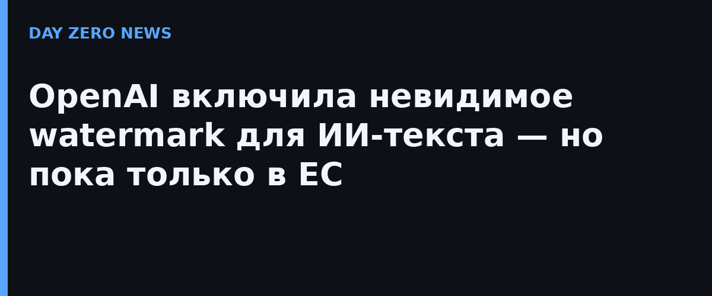

5 октября 2026 года OpenAI официально объявила о запуске textGrain — технологии невидимого водяного знака для текста, сгенерированного языковыми моделями. Шаг продиктован законом ЕС об ИИ (AI Act): генеративные системы обязаны делать машинно-читаемым признак того, что текст создан ИИ. В ближайшие недели textGrain начнут получать подписчики всех тарифов ChatGPT и Codex — но только внутри Европейского союза. Клиенты API по всему миру могут включить маркировку в настройках проекта или организации, причём функция выключена по умолчанию: OpenAI сознательно не делает её глобальным стандартом на старте.
Watermark — это статистический сигнал, «зашитый» в выбор слов моделью; человек его не замечает. Технический отчёт «textGrain: Entropy-Calibrated Watermarking for Language Model Text» написан в соавторстве с Университетом Пенсильвании и Йельским университетом. Самая свежая часть отчёта — честно приведённые ограничения. При допустимом уровне ложных срабатываний в 1% детектор распознаёт ИИ-текст о психологии в 78,5% случаев при объёме 200 токенов, в 89,7% — при 300 и в 94,3% — при 400. С математическими текстами всё хуже: 36,5%, 52% и 60,8% соответственно — там модели оставляют меньше свободы в выборе слов. Короткие тексты watermark в принципе почти не берёт.
Пользоваться самим детектором водяного знака пока могут только одобренные исследователи и профильные организации — заявки OpenAI начала принимать 5 октября, доступ выдаётся индивидуально в рамках Кодекса практики ЕС о прозрачности ИИ-контента. Водяной знак при этом не показывает, кто именно генерировал текст, какая доля текста написана человеком и соответствует ли содержание истине. Компанию планируют выпустить технологию в open source, чтобы над проверкой подлинности текста работали все желающие; инструменты верификации для изображений и звука (openai.com/verify и Content Provenance API) остаются открытыми как прежде.
У Anthropic текстовые водяные знаки уже включены по умолчанию шире, чем у OpenAI, а Google давно продвигает SynthID — textGrain, по заявлению OpenAI, показывает в эталонных тестах результаты не хуже. Показательно, что именно обязательное требование ЕС стало триггером: формально локальная норма снова тянет за собой глобальные продуктовые решения крупных ИИ-компаний.